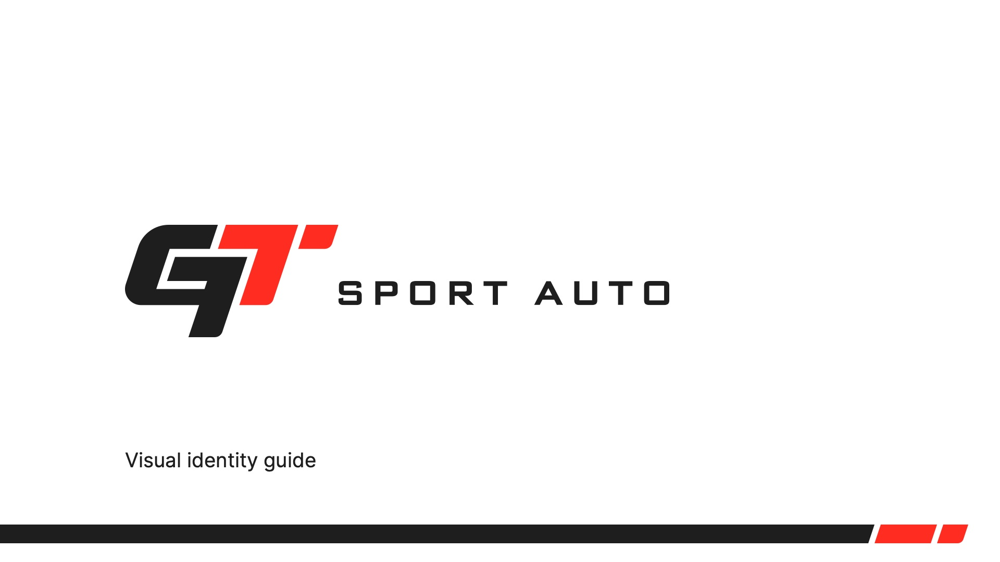

GT Sport Auto — built for speed. (2026)
GT Sport Auto (Gabrek Tuning Sport Auto) improves cars: tuning, performance upgrades, parts and garage work. The identity joins the letters G and T into one fast, forward-leaning mark, backed by a full set of racing-inspired brand elements.

Concept & construction
The mark is built from the letters G and T, with ideas of automotive, racing, upgrading and improving behind it.
It sits on a 32 × 32 unit grid (one unit = 20 px), with corner radii of 80, 40 and 20 units keeping every curve consistent.
Logomark
Monochrome and colour versions, each in positive and negative, plus a gradient version of each.
Lockups
Vertical and horizontal lockups pair the mark with “Sport Auto” in Science Gothic Medium. Each has a defined minimum safe space and works on white, black and red.
Brand elements
Pieces of the logo become a toolkit: the arrow from the T, a speed line with a scalable part and locked ratio, and a chequered diamond pattern borrowed from the racing flag.
The guide shows them on banners, posters and wide headers.
Colour
Racing red and near-black, with white. Each colour also has a gradient for added depth.
#FF2C22 · CMYK 0/94/91/0#1E1E1E · CMYK 0/0/0/100#FFFFFFAvatars & icons
Square and round avatars for social media, plus a favicon.